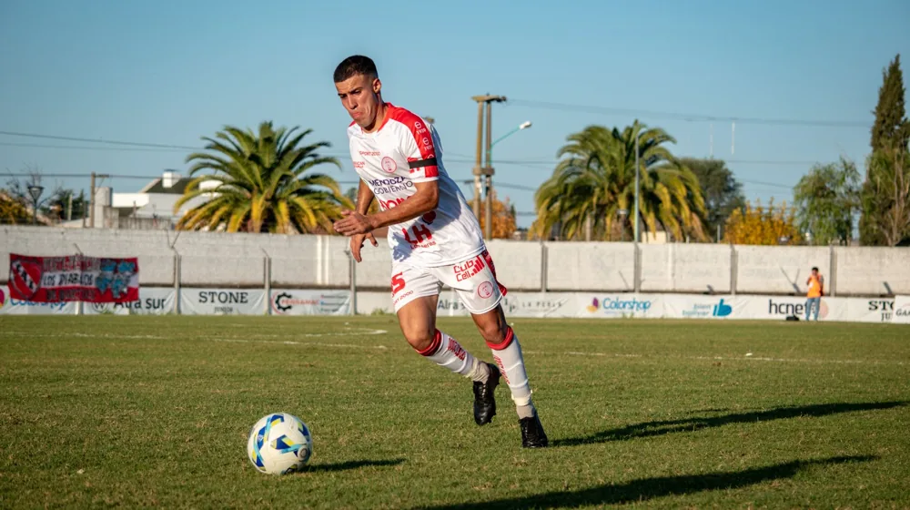

네이마르, 대체 왜 또? 충격 이적설 뒤에 숨겨진 진짜 이야기
사진: Omar Ramadan / Pexels (무료 이미지, 출처 표기)
혹시 네이마르라는 이름, 오늘 인터넷에서 유난히 자주 보지 않으셨나요? 평범한 축구선수 이름이 갑자기 대한민국 검색창을 뜨겁게 달군 이유, 과연 무엇일까요?

어느 날 갑자기, 축구계를 넘어 일반 대중에게까지 뜨거운 감자로 떠오른 이름, 네이마르. 그가 또 다시 거액의 이적설에 휘말리며 전 세계를 들썩이게 만들었습니다. 단순히 '어디로 옮겼다'는 사실만으로는 설명할 수 없는, 그 이면에 숨겨진 놀라운 이야기들이 있습니다. 지금부터 그 미스터리를 함께 파헤쳐 볼까요?
네이마르, 모두가 놀란 '사우디행' 진짜 이유는?
최근 전 세계 축구 팬들을 가장 놀라게 한 소식은 바로 네이마르의 사우디아라비아 알힐랄 이적이었습니다. 유럽 빅리그의 최고 스타가 '오일 머니'를 앞세운 사우디 리그로 향한다는 소식은 단순한 이적을 넘어, 축구계 판도를 뒤흔들 거대한 변화의 시작을 알리는 신호탄처럼 받아들여졌습니다.
많은 이들이 천문학적인 이적료와 연봉에만 주목하지만, 사실 이적의 배경에는 단순히 돈 이상의 복잡한 역학 관계가 숨어 있습니다. 과연 그 속내를 들여다보면 어떤 진실이 드러날까요?
그의 '파리 탈출기', 표면적인 돈 문제가 아니다?
네이마르가 파리 생제르맹(PSG)을 떠난다는 소문은 사실 어제오늘 일이 아니었습니다. 2017년, 바르셀로나를 떠나 PSG로 이적하며 '세계 최고 이적료'라는 기록을 세웠지만, 이후 그의 PSG 생활은 잦은 부상과 팬들과의 갈등, 그리고 기대에 미치지 못하는 챔피언스리그 성적으로 얼룩졌습니다.
특히, 팬들의 노골적인 야유와 함께 '팀을 떠나라'는 메시지까지 들으며 관계는 회복 불능 수준에 이르렀죠. 이런 상황에서 네이마르는 새로운 동기 부여와 환경 변화를 갈망했을 가능성이 큽니다. 사우디 리그는 그에게 엄청난 재정적 보상뿐만 아니라, 다시금 팀의 절대적인 에이스로 군림하며 부활을 꿈꿀 수 있는 기회를 제공한 셈입니다.
화려함 뒤 가려진 그림자: 부상과 논란의 아이콘?
네이마르의 커리어를 이야기할 때 빼놓을 수 없는 것이 바로 '부상'과 '논란'입니다. 발목 부상은 그에게 숙명과도 같았고, 중요한 경기마다 쓰러지는 모습은 팬들에게 깊은 아쉬움을 남겼습니다. 게다가 경기 외적인 사생활 이슈, 다소 과한 몸짓으로 비난받던 '할리우드 액션' 논란 등은 그를 늘 뜨거운 도마 위에 올려놓았습니다.
이러한 문제들은 그의 뛰어난 축구 실력마저 가리곤 했습니다. 하지만 이러한 그림자 속에서도 그가 여전히 세계 최고 수준의 선수로 평가받는 것은 변함없는 사실입니다. 왜일까요?
그럼에도 그가 '슈퍼스타'인 이유: 역대급 재능과 상징성
논란과 부상에도 불구하고 네이마르가 여전히 세계적인 슈퍼스타로 인정받는 이유는 명확합니다. 타고난 축구 센스와 번뜩이는 드리블, 예측 불가능한 플레이는 상대를 압도하고 관중을 열광시킵니다. 그는 그야말로 '축구 도사'이자 '마술사'에 가깝죠.
브라질 국가대표팀의 에이스로서 '펠레', '호나우두'의 뒤를 잇는 상징적인 존재이기도 합니다. 그의 경기는 단순한 스포츠 경기를 넘어, 한 시대의 아이콘이 보여주는 예술적인 퍼포먼스에 가깝습니다. 아래 표는 그의 주요 이적과 이적료를 보여줍니다.
'오일 머니'가 바꿀 축구 판도: 사우디 리그의 야망과 네이마르의 역할
네이마르의 사우디 이적은 단순한 개인의 선택을 넘어, 사우디 리그가 전 세계 축구계에 던지는 강력한 메시지입니다. 크리스티아누 호날두를 시작으로 수많은 스타 선수들이 사우디로 향하며, 중동 축구는 이제 더 이상 변방이 아닌 새로운 '축구 허브'로 부상하려 하고 있습니다.
사우디는 막대한 자본력을 바탕으로 리그 수준을 끌어올리고, 월드컵 유치까지 꿈꾸는 야심 찬 계획을 가지고 있습니다. 네이마르는 이러한 야망의 최전선에서 사우디 리그의 브랜드 가치를 높이고, 전 세계 축구 팬들의 이목을 집중시키는 핵심적인 역할을 하게 될 것입니다.
네이마르의 다음 페이지, 과연 해피엔딩일까?
네이마르의 사우디 이적은 그의 커리어에 있어 새로운 챕터를 열었습니다. 화려함과 논란이 끊이지 않던 유럽 생활을 뒤로하고, 그는 이제 중동 땅에서 자신의 축구 인생 2막을 시작합니다. 과연 그는 알힐랄에서 압도적인 실력으로 모든 우려를 불식시키고, 팀을 성공으로 이끌 수 있을까요?
이적 시장을 뜨겁게 달군 '네이마르 효과'가 사우디 리그에 어떤 변화를 가져올지, 그리고 그 스스로 어떤 유산(legacy)을 남길지, 전 세계 축구 팬들의 시선이 그에게 집중되고 있습니다. 그의 발끝에서 펼쳐질 새로운 이야기가 벌써부터 기대되는군요.
🔗 이 글도 함께 보면 좋아요: 대한민국 해양경찰청, 대체 왜 난리일까? 당신이 몰랐던 '진짜' 임무와 숨겨진 희생!
관련 추천 상품
이 포스팅은 쿠팡 파트너스 활동의 일환으로, 이에 따른 일정액의 수수료를 제공받습니다.